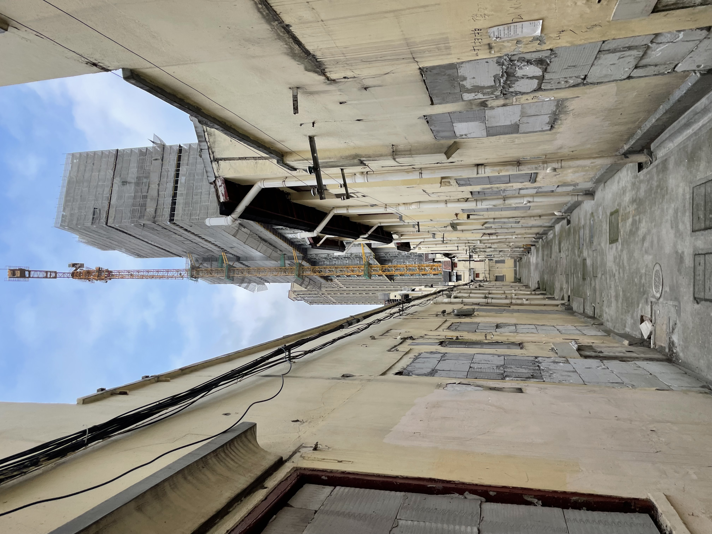
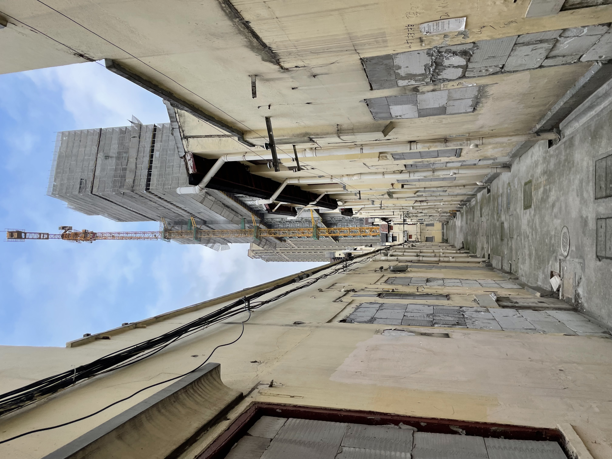

Archive of Laochengxiang
Reimagining Deconstructed Landscape
 

Starting from the 1990s, Laochengxiang has been experiencing radical demolishment as a result of Shanghai's gentrification progress. The demolishment projects have drastically reconfigured the spatial texture, leaving the local knowledge and lived experience of Laochengxiang unremembered. Since the pandemic, an increasing portion of Laochengxiang's neighborhoods have been expropriated and their residents evicted, creating large blocks of deserted space. [Read more: A Brief History of Laochengxiang]
The scans of the locales reenact the imaginable fragmentation of urban landscape that is central to one's experience of a city. These reenactments together conjoin the reminiscent of a walking tour, that as Ingold and Vergunst suggest, “momentarily fuses or brings into phase the otherwise divergent and unsynchronized life trajectories of individual participants into a unified tale of belonging to this place” (2008 p.9).
Welcome to Archive of Laochengxiang, proceed to begin the procession.